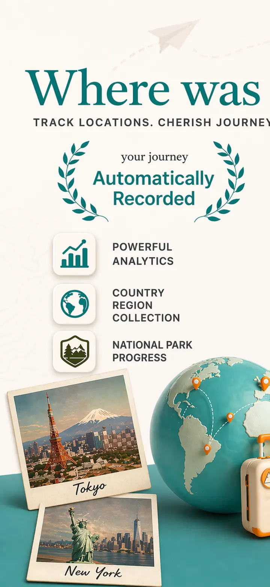
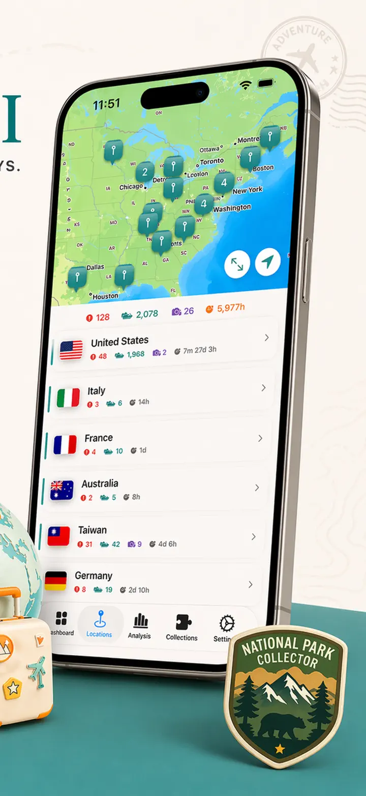
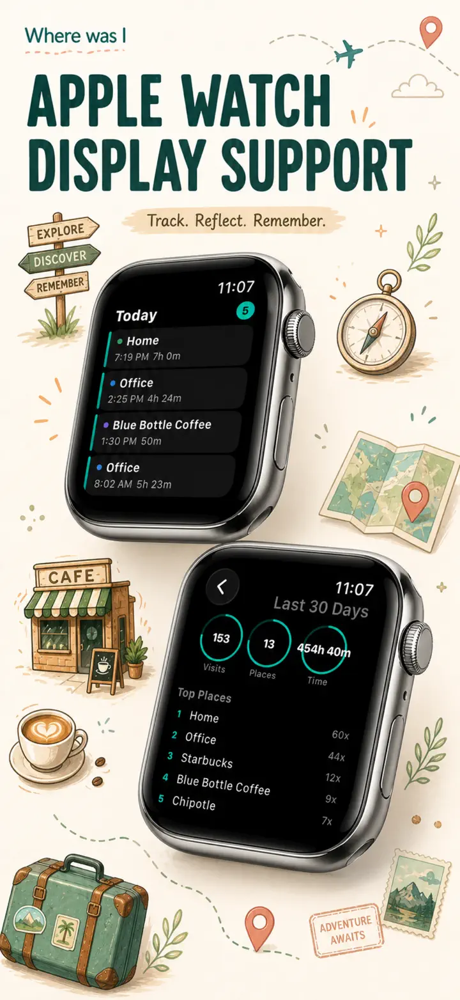
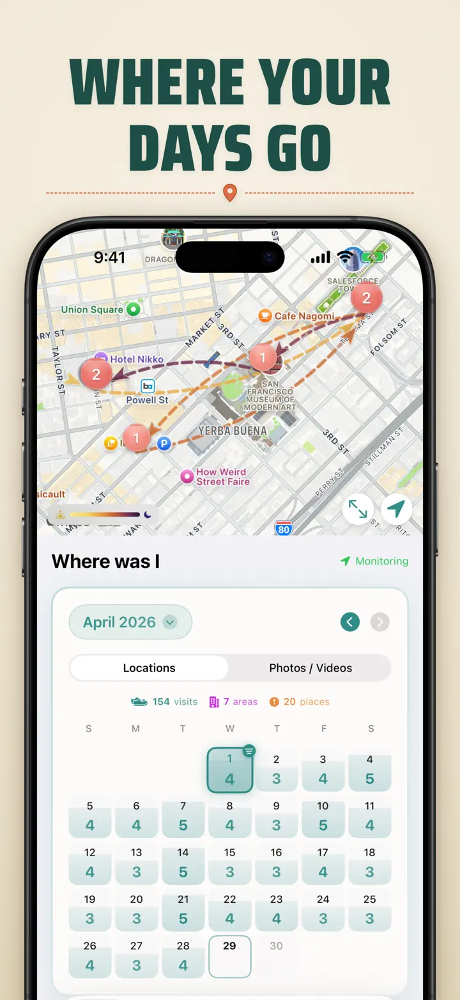
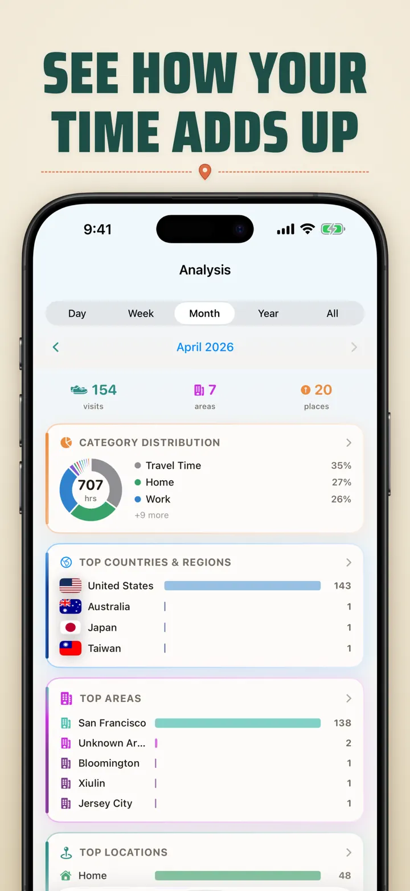
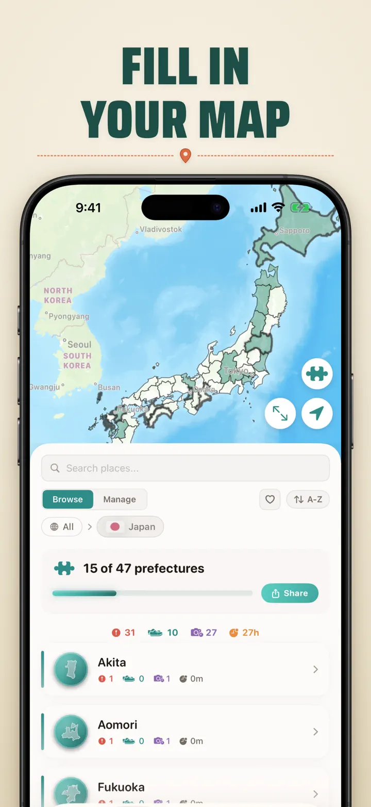
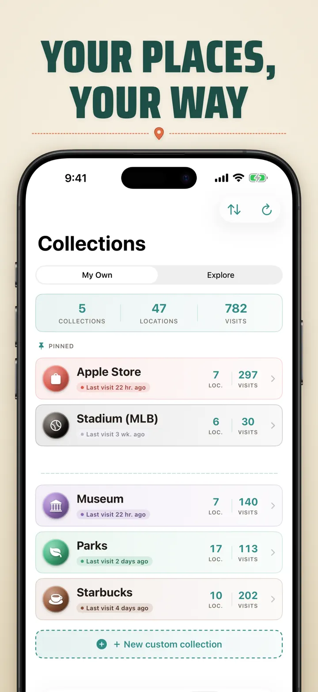
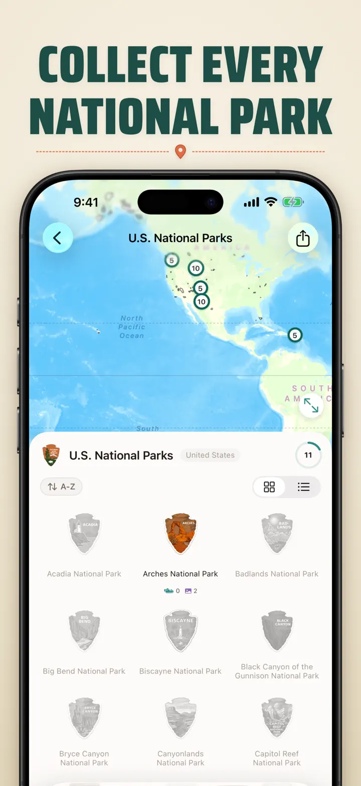
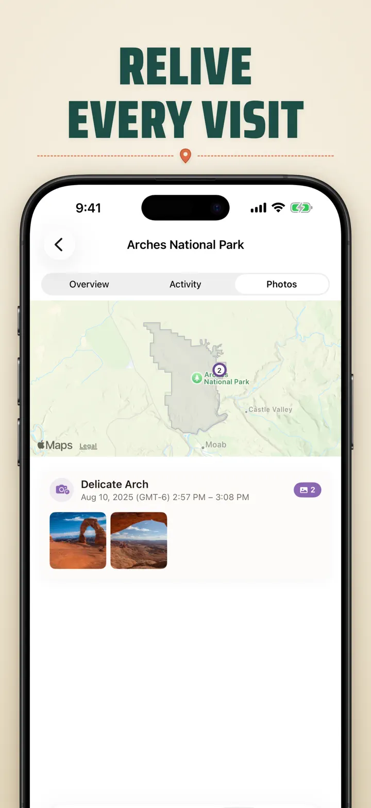

Where was I ?
auto travel / photo locations.
New: Japan's 103 Ichinomiya shrines, each with its own carved badge. Automatic visit tracking and a private timeline, all on your device.
Download on the App Store
About the app
Where was I ? — Your Personal Location Memory
Ever tried to remember that amazing restaurant from last month? Or wondered how much time you spend at the office versus home? Where was I ? automatically tracks your visits and builds a beautiful timeline of your life's journey.
AUTOMATIC TRACKING
No manual logging needed. The app quietly records when you arrive and leave places, creating a detailed visit history without any effort on your part.
SMART CALENDAR VIEW
See your visits organized by day, week, or month. The intuitive calendar shows visit counts and unique places at a glance. Tap any day to see exactly where you were.
HOME & LOCK-SCREEN WIDGETS
See your most recent visits with the medium Home Screen widget. Lock Screen widgets show your current location, a live dwell timer, or today's visit count — all tappable.
ORGANIZED LOCATIONS
Locations are automatically grouped by region and city. Assign custom categories like Home, Work, Gym, or Cafe. Create your own categories with custom icons and colors to match your lifestyle.
POWERFUL ANALYTICS
Discover patterns in your life:
- Time distribution across categories
- Your most visited places
- Weekly rhythm analysis
- Visit frequency trends
- Per-location stay-duration chart (day, week, month, or year)
COUNTRY REGION COLLECTION
Turn your travels into a puzzle! See how many states, provinces, or regions you've visited within each country. Share your progress as a puzzle image.
NATIONAL PARK PROGRESS
Explore the great outdoors! Automatically log your visits to national parks and track your progress alongside your daily locations.
100 FAMOUS JAPANESE CASTLES
Touring Japan? A built-in collection tracks your visits to the country's 100 famous castles. Find it under Collections → Explore → Japan.
CUSTOM COLLECTIONS
Track anything you want — Apple Stores, museums, breweries, bookshops. Create a collection, set keywords, and watch it fill up automatically. Each collection shows count, history, and a map.
IMPORT YOUR LOCATION HISTORY
Coming from another app? Bring your full history with you — the format is detected automatically, large exports are handled, and you'll see a preview before anything is imported:
- Google Timeline (Google Maps export or Google Takeout)
- Arc Timeline (the monthly .json files you export from Arc)
- Moves (ProtoGeo / Facebook Moves backup)
BULK MANAGEMENT
Manage all your locations in one place. Search, sort, and filter. Select multiple locations to categorize or delete in bulk.
PRIVACY FIRST
Your location data stays on your device. No accounts required. No data sent to servers. Your movements are your business.
PERFECT FOR:
- Tracking work hours and locations
- Remembering restaurants and shops you've visited
- Analyzing your daily routine
- Keeping a travel journal and logging national park visits
- Expense reporting and mileage tracking
- Understanding your time allocation
FEATURES:
- Automatic arrival and departure detection
- Calendar view with daily visit timeline
- Home Screen and Lock Screen widgets with deep-linking
- Location grouping by region and city
- Custom categories with icons and colors
- Smart category suggestions from Apple Maps
- Detailed visit history with duration
- Per-location stay-duration chart (day / week / month / year)
- Analytics dashboard with insights
- Search and filter locations
- Country region collection with shareable puzzle image
- National park progress tracking
- 100 Famous Japanese Castles built-in collection
- Custom collections with keyword auto-matching, manual editing, and stats
- Bulk location management
- Import from Google Timeline, Arc Timeline, and Moves
- Export capabilities
- No account required
- Privacy-focused design
Start building your location memory today. Download Where was I ? and never forget where you've been.
Privacy Policy: https://masawata.net/privacy-policy.html Terms Of Service: https://www.apple.com/legal/internet-services/itunes/dev/stdeula/
Screenshots








Where was I ?
New: Japan's 103 Ichinomiya shrines, each with its own carved badge. Automatic visit tracking and a private timeline, all on your device.
Download on the App Store